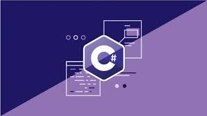

Lenguajes de programacion en la actualidad
JavaScript
JavaScript es ampliamente utilizado en el desarrollo web para crear sitios web interactivos y dinámicos. Se utiliza para agregar funcionalidades como formularios interactivos, validación de datos, efectos visuales, navegación basada en pestañas y muchas otras características interactivas en el navegador. Es la base de la programación front-end. Junto con HTML y CSS, se utiliza para crear la estructura, el diseño y la interacción de las páginas web. Frameworks como React, Angular y Vue.js permiten desarrollar aplicaciones web altamente interactivas.
Python
Se utiliza en el desarrollo web a través de frameworks como Django y Flask para crear aplicaciones web y sitios web dinámicos. A través de frameworks como Kivy y BeeWare, Python se utiliza en el desarrollo de aplicaciones móviles para iOS y Android.
Java
Java se utiliza para desarrollar aplicaciones móviles en la plataforma Android. Android Studio es la principal herramienta de desarrollo que utiliza Java para crear aplicaciones Android. se utiliza en el desarrollo de aplicaciones empresariales y sistemas de gestión empresarial. Frameworks como Spring y Java EE son comunes en este ámbito.

C#
Es ampliamente utilizado en el desarrollo de aplicaciones de escritorio para Windows a través de la plataforma Windows Forms y Windows Presentation Foundation (WPF). Es un lenguaje popular en el desarrollo de videojuegos a través del motor Unity, que es ampliamente utilizado en la industria de los videojuegos. C# se utiliza en el desarrollo de aplicaciones empresariales y sistemas de gestión empresarial. La plataforma .NET ofrece una variedad de herramientas para este propósito.
